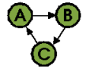
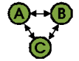

- Home
- Examples
- Download
- User Guide
- Usage
- How Classycle works
- What Classycle's Analyser measures
- Dependency Definition File
- Hints to improve design
- Usage
- API documentation
- SourceForge project page
3. What Classycle's Analyser measures
Analyser measures several metrics which are tabulated in the XML report. They are divided into two groups: Class/package metrics and cycle metrics.3.1 Class/Package Metrics
For each analysed class/package the following metrics are reported:- Type of the class. A class is either a
- interface,
- abstract class, or
- concrete class.
- Innerclass flag which denotes whether the class is an inner class or not.
- Size of the class/package measured in bytes of the class file and number of classes in the package, respectively. In the case of merged inner classes the size of a class is the size of its class file plus the sum of the sizes of all its inner classes.
- Number of classes/packages directly referring this class/package.
- Number of internal classes/packages directly used by this class/package.
- Number of external classes/packages directly used by this class/package.
- Layer index as calculated in the 5th step of the analysis.
- Source or sources of the class/package. A source of a class is either the root directory of the class file hierarchy or the zip/jar/war/ear file which contains the class file. Usually there is only one source. Several sources (separated by commas) appear if there are at least two classes with the same fully qualified name.
In addition averaged values and maximum values are calculated by the XSLT reportXMLtoHTML.xsl.
3.2 Cycle metrics
Classycle calculates for each class/package vertex of the cycle the so-called eccentricity. This is the smallest number of steps which guarantees that any other vertex can be reached from this vertex. Classycle calculates the eccentricity by first calculating the distance matrix using the Floyd-Warshall algorithm. The distance from vertex A to vertex B is defined as the shortest path from A to B. Note, that in a directed graph the distance from B to A is in general different from the distance from A to B. The eccentricity of A is the maximum over all distances measured from A.In addition Classycle calculates for each vertex of the cycle the maximum fragment size. This is the number of vertices in the largest strong component (i.e., subcycle, for a more precise definition see Chapter 2.4) the cycle condenses after removing that vertex. This analysis helps to detected the optimal point (i.e., class) in the cycle to start improving a design with cyclic dependencies. Chapter 4 gives hints for such improvements.
For each cycle Classycle reports the following metrics:
- Number of classes/packages.
- Best fragment size: The smallest maximum fragment size. A vertex with best fragment size is called a best fragmenter.
- Girth: This is the length of the shortest possible cyclic path.
- Radius: The minimum eccentricity. All vertices with the minimum eccentricity form the center.
- Diameter: The maximum eccentricity.
- Layer index.
| Example | Best fragment size | Girth | Radius | Diameter |
|---|---|---|---|---|
| 1 | 2 | 1 | 1 | |
| 1 | 2 | 1 | 2 | |
|  | 1 | 3 | 2 | 2 |
|  | 2 | 2 | 1 | 1 |
 | 1 | 3 | 2 | 3 |
(C) 2003-2008 Franz-Josef Elmer. All rights reserved. Last modified: 4/10/2006